Bathrooms have quietly become one of the most redesigned rooms in the house, and it's not just about chasing a trend for its own sake.
People are spending real time in there, morning routines, long showers after a hard day, and the design is finally starting to reflect that.
What's actually changing isn't just the finishes. It's the whole approach — comfort and real function now matter as much as how the room photographs, and the best examples this year come from actual homes, not showroom displays.


What's Really Driving This Year's Changes
Every trend below shares one thing in common: it makes the bathroom feel more like a retreat and less like a utility room.
Warm materials, intentional lighting, and genuinely useful technology are replacing the cold, catalog-perfect look that dominated for years.
None of these need a full gut renovation either. A finish swap, a styled shelf, or one statement material can shift the whole feel of the room without touching the layout at all.
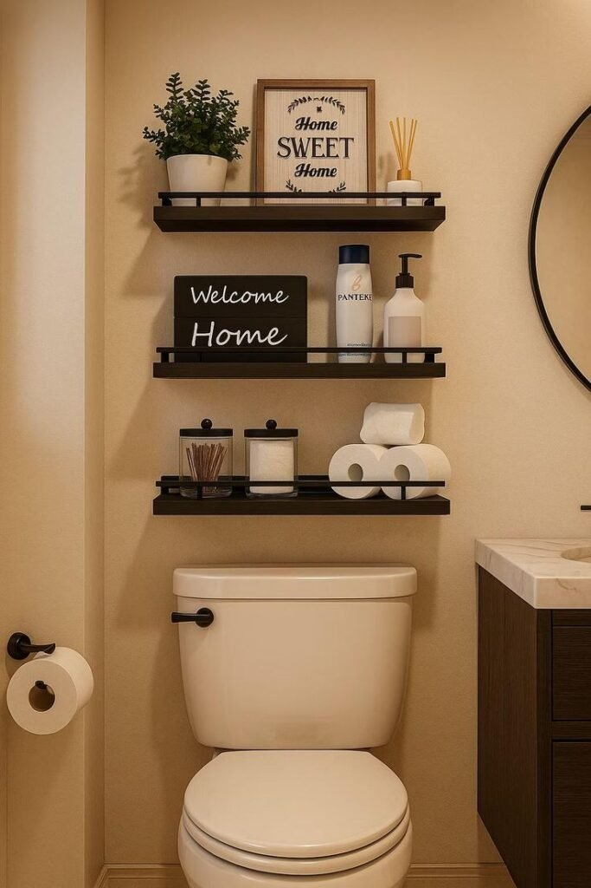
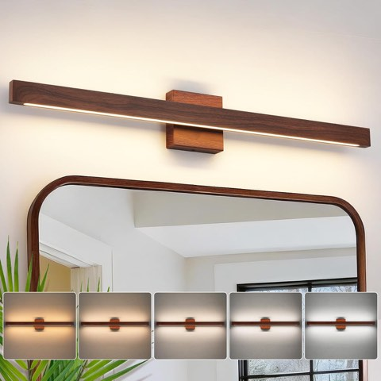
Modern Bathroom Light Fixtures Over Mirror, 32 Inch Brown Wood Finish Vanity Light Bar
Shop on Amazon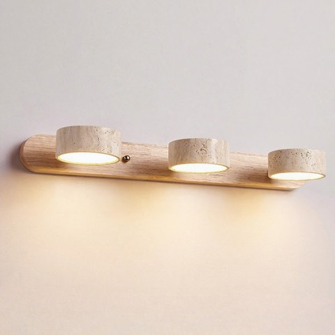
LED Natural Wood Vanity Light with 3 Travertine Stone Shades, 360° Rotatable
Shop on Amazon1. Bathrooms Are Getting More Personal
The showroom-perfect, every-bathroom-looks-identical era is fading, and what's replacing it is a lot more personal.
A vintage mirror. An unexpected color. Art on the walls. Details that would never show up in a catalog.
It's partly a reaction to how easy it's become to copy a Pinterest board exactly. A bathroom with a few genuinely personal choices stands out specifically because it doesn't look mass-produced.
Mixing in real art and objects instead of a matching set is one of the clearest signs of where bathroom design is actually headed right now.
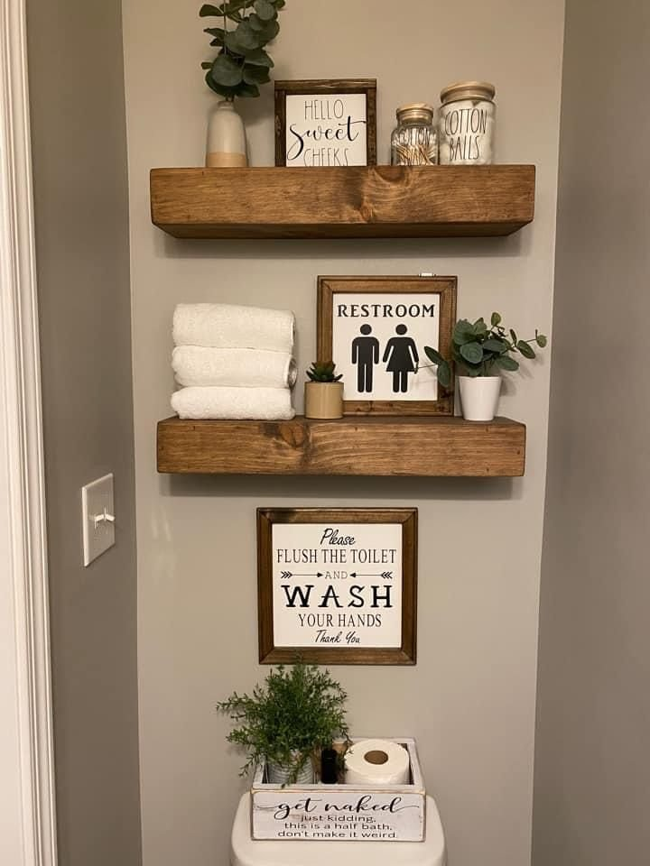
2. Sustainability Is Built In, Not Bolted On
Sustainability has moved from a niche add-on to something people ask for upfront — low-flow fixtures, water-saving toilets, durable materials chosen to last rather than get swapped out in five years.
It's not just about the water bill, either. Materials that hold up over time mean fewer renovations down the line, which ends up being the more sustainable choice either way you look at it.
Even small swaps add up. An efficient showerhead or a better-sealed window does real work without changing how the bathroom looks or feels day to day.
3. Floating Vanities Keep Opening Up the Floor
Floating vanities have become the go-to move for making a bathroom feel larger without actually changing its square footage.
The visible floor space underneath does more visual work than you'd expect.
Beyond the size trick, they're genuinely easier to clean around, and they give small bathrooms a cleaner, more modern feel almost instantly.
A simple floating vanity, left open underneath with just a woven basket for storage, shows how much lighter a whole room can feel with one single swap.
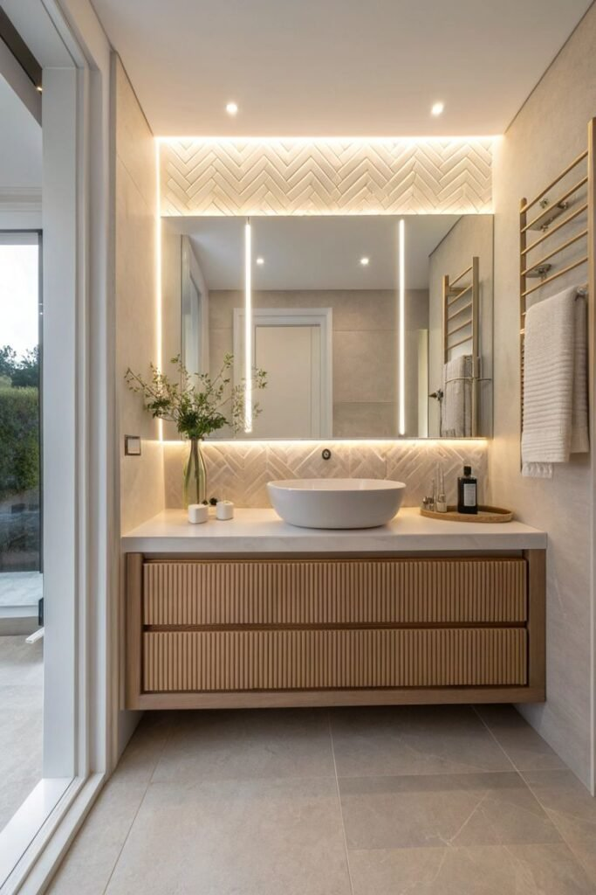
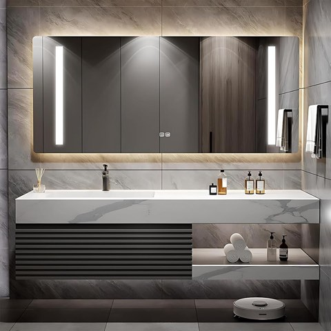
48 Inch Floating Bathroom Vanity, Single Sink, Anti-Fog LED Mirror Cabinet, Dark Gray
Shop on Amazon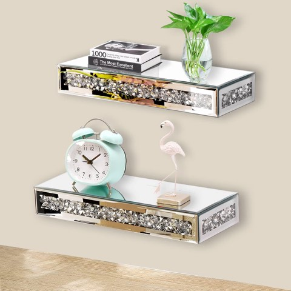
TACIDON Mirrored Floating Shelves, Crystal Crushed Diamond, Set of 2, Silver
Shop on Amazon4. Moody, Dark Palettes Keep Gaining Ground
Dark bathrooms have moved from bold statement to genuinely mainstream choice, and the appeal is obvious once you see one done well.
They read as luxurious in a way all-white rooms rarely manage.
Charcoal walls, deep green cabinetry, even a fully black shower surround, all work, especially paired with warm lighting that keeps the space from feeling like a cave.
A moody bathroom with a wood vanity and a walk-in shower proves dark doesn't have to mean small-feeling. Good lighting and a few lighter materials keep the whole thing balanced.
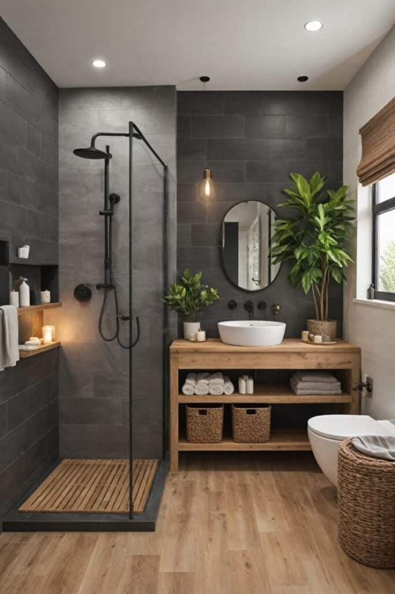
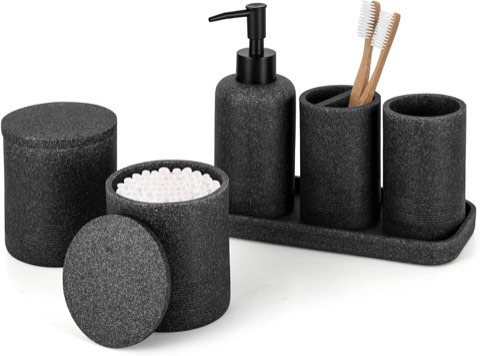
ZCCZ Black Stone Bathroom Accessories Set, 6 Pieces, Countertop Organizer
Shop on Amazon5. Smart Tech, But Only the Useful Kind
Smart bathroom tech used to feel gimmicky, but the features sticking around now are the genuinely useful ones — touchless faucets, heated floors, fog-free mirrors, rather than anything that needs an app to operate.
The best smart upgrades disappear into the design instead of announcing themselves. A touchless faucet looks like any other faucet, right up until you actually use it.
It's worth being selective here, too. A bathroom overloaded with gadgets ages faster than one with just one or two features that genuinely make the daily routine easier.
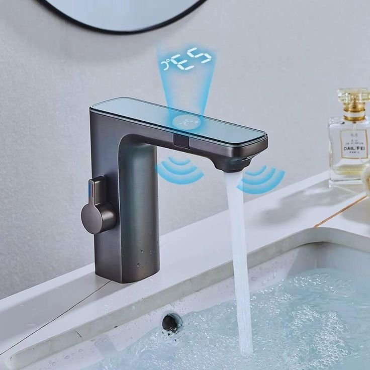
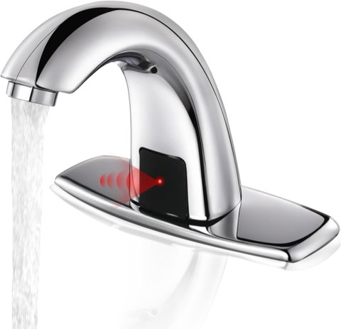
Automatic Touchless Bathroom Sink Faucet, Commercial Sensor Motion Activated
Shop on Amazon6. Texture Is Replacing Flat Paint
Flat painted walls are giving way to texture — venetian plaster, ribbed tile, fluted panels, anything that catches light differently depending on the angle you're looking from.
Texture adds depth without adding color or pattern, which makes it one of the lowest-risk ways to make a neutral bathroom feel considerably more expensive.
It works especially well paired with a tight, neutral palette, letting the texture itself become the main visual interest instead of competing with busy color choices.
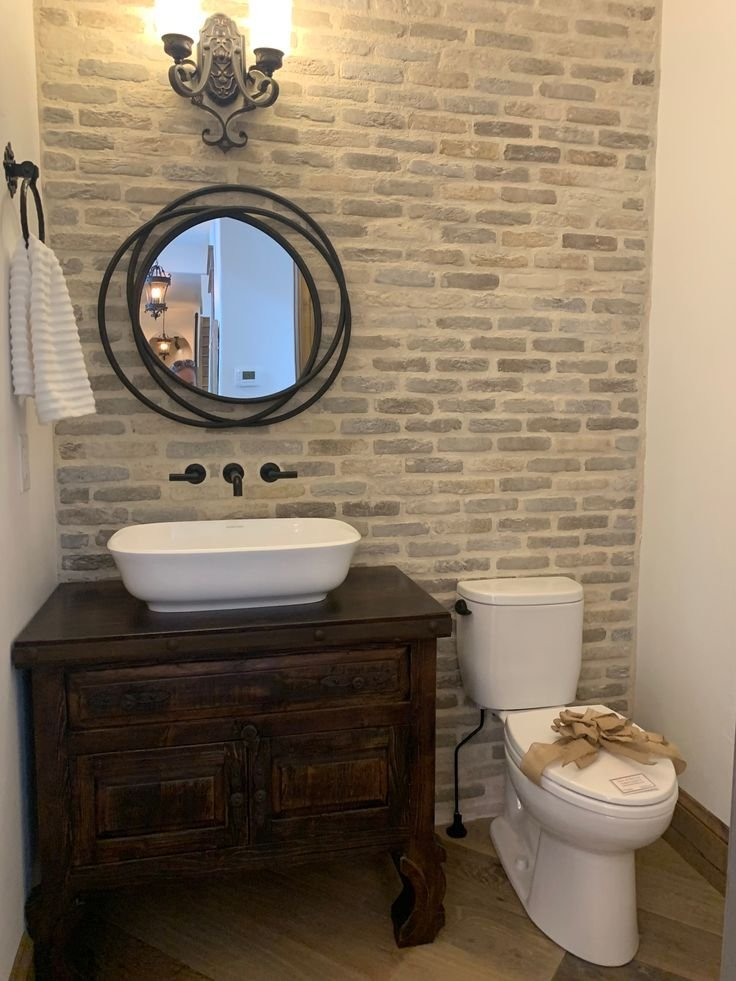

7. Freestanding Tubs Are the New Centerpiece
Built-in tubs are increasingly getting replaced by freestanding ones, and it's less about soaking and more about what the tub does for the room visually.
It becomes the obvious focal point the second you walk in.
A freestanding tub also frees up the floor plan. Without a surround to build around, the whole layout gets more flexible.
An all-white freestanding tub, kept simple against equally simple walls, shows how much presence the shape alone can add without a single other design move.
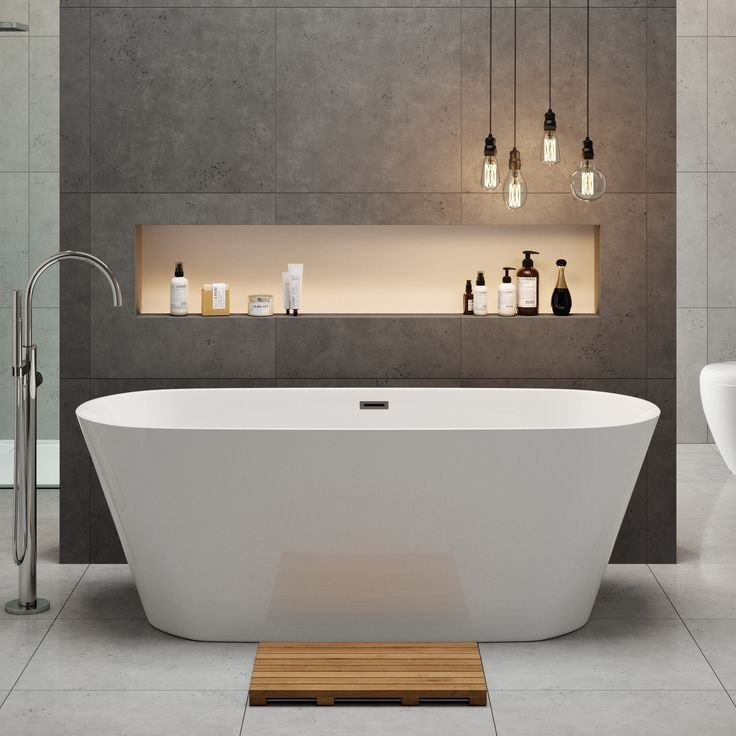
8. Statement Tile Adds Real Personality
Statement tile has become one of the easiest ways to make a bathroom feel custom without touching the layout at all.
A bold pattern, an unexpected color, or a mix of shapes does most of the work on its own.
The trick is containing it. One statement wall, a shower surround, or a floor pattern reads as intentional, while covering every surface starts to compete with itself.
Pick one statement moment and let everything else in the room stay quiet. That contrast is what makes the tile actually stand out.
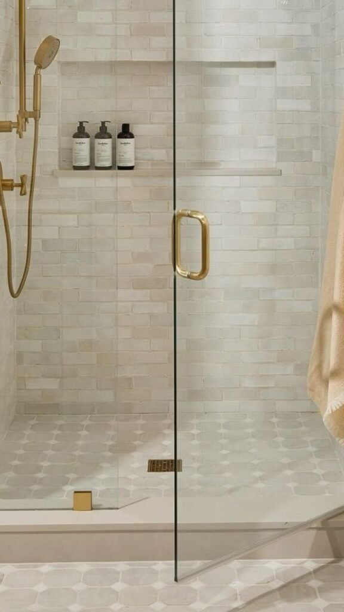
9. Spa-Inspired, But Actually Warm
Spa-style bathrooms are everywhere this year, but the versions that actually work avoid the cold, sterile look spa design used to default to.
The real formula is warm lighting, soft rounded edges, natural materials, and a genuinely restrained color palette, not an all-white room with nothing in it.
A few plants, a stack of folded towels, and one or two considered objects make the difference between a bathroom that feels like a retreat and one that just feels empty.
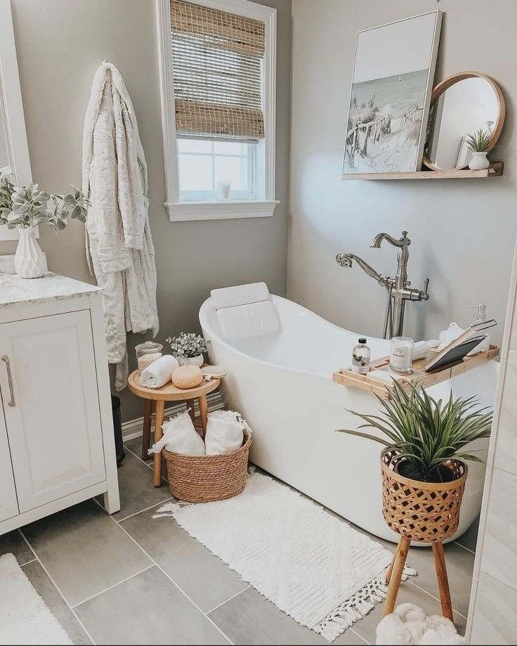
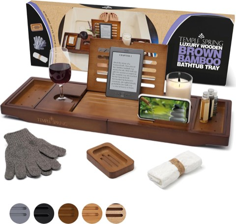
Temple Spring Bamboo Bathtub Tray Caddy, Expandable, Luxury Spa Gift Set
Shop on Amazon10. Open Shelving, Styled on Purpose
Open shelving in a bathroom only works when it's genuinely styled, not just a place where loose bottles end up.
Done right, it adds real warmth and personality to a room that's otherwise mostly hard surfaces.
Stick to a tight color palette — folded towels, a plant, one or two ceramic pieces — and resist the urge to fill every inch of the shelf.
A simple open shelf, with rolled towels and a small plant kept to a clean, consistent palette, proves restraint reads as far more expensive than a fully loaded shelf ever does.
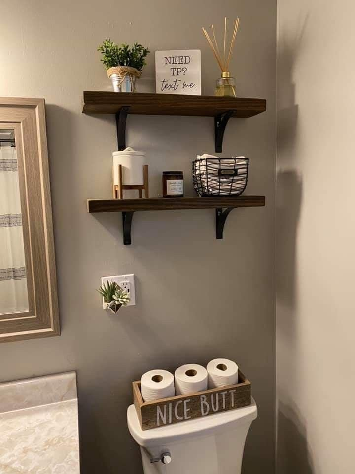
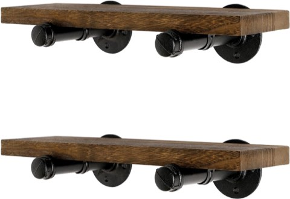
Wall Mounted Floating Shelves with Industrial Pipe Brackets, Set of 2, Rustic Wood
Shop on Amazon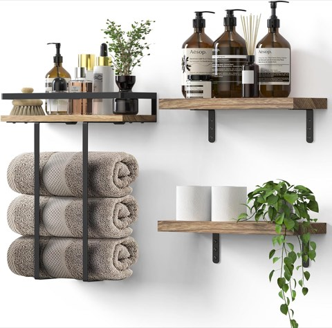
Towel Rack with Wall Mounted Bathroom Shelves, Set of 3, Solid Wood, Farmhouse
Shop on Amazon11. Natural Materials Are Doing the Warming Up
Wood, stone, and other natural materials have become the fastest way to keep a bathroom from feeling sterile, especially once tile and fixtures lean toward cooler, more minimal palettes.
A wood vanity, a stone-look countertop, or even a single woven basket softens a room that would otherwise read as entirely hard surfaces.
The goal isn't to recreate a spa brochure. It's picking one or two natural materials and letting them do real work, instead of scattering small touches everywhere.
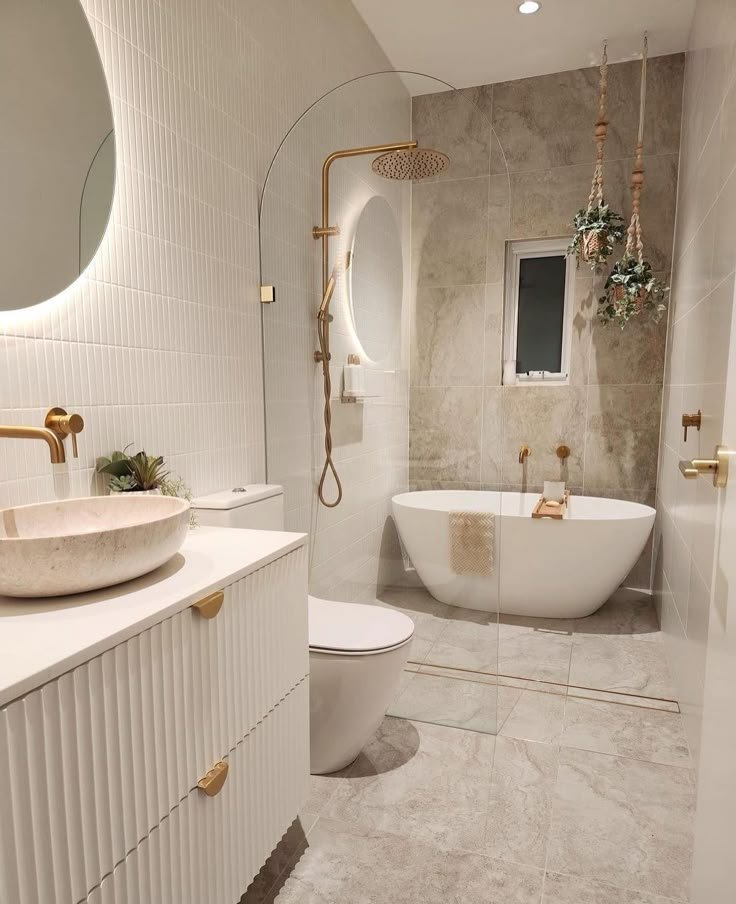
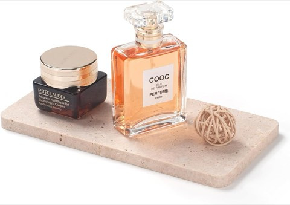
Edgeless Travertine Bathroom Vanity Tray, Decorative Rectangular Marble Tray
Shop on Amazon12. Matte Black and Brushed Brass Took Chrome's Spot
Chrome spent a long time as the safe, default fixture finish. Matte black and brushed brass have taken over that role instead, and both read as noticeably more intentional.
Matte black works especially well as an anchor. A black tub, black fixtures, or a black-framed mirror grounds a mostly white or neutral bathroom instantly.
A matte black freestanding tub against white subway tile, with a built-in dark niche and a single black pendant overhead, shows exactly how far one finish choice can carry a whole room.

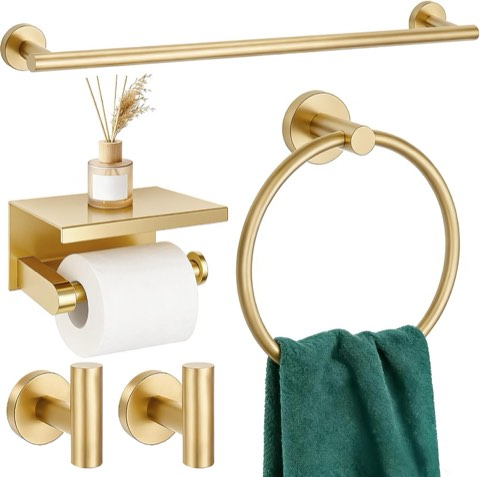
5 Pieces Bathroom Hardware Accessories Set, Brushed Gold, 24 Inch Towel Rack
Shop on Amazon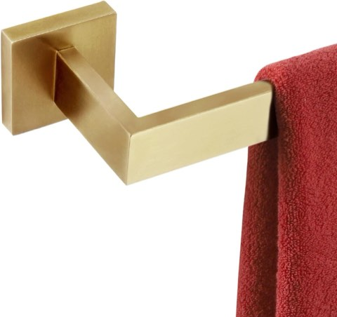
KOKOSIRI 24-Inch Single Towel Bar, Wall Mounted Stainless Steel, Brushed Gold
Shop on Amazon13. Warm Neutrals Are Pushing Cool Gray Out
Cool gray dominated bathrooms for years, but it's losing ground fast to warmer neutrals — think soft taupe, warm beige, off-white with a hint of cream instead of blue undertones.
The shift comes down to how the room actually feels to stand in. Warm tones read as calmer and more inviting, where gray can start to feel clinical the moment the lighting isn't perfect.
A small bathroom in warm beige proves the palette doesn't sacrifice any of that crisp, clean feeling gray used to own.
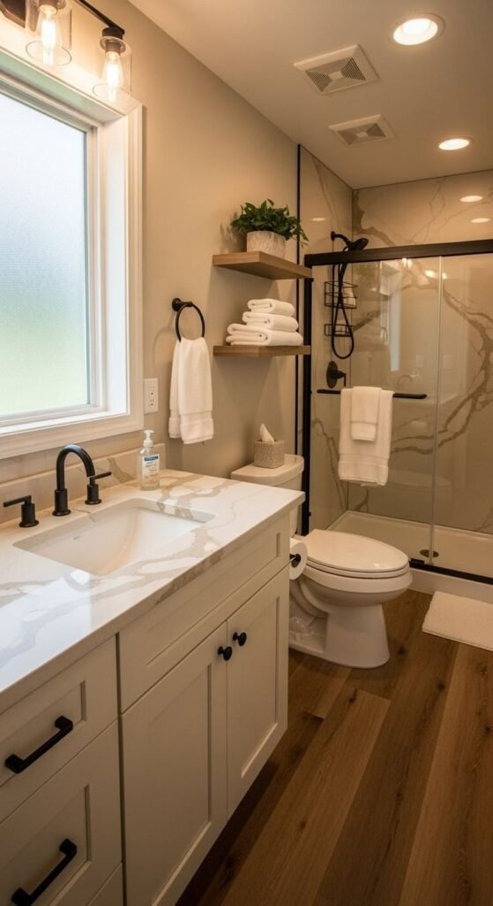
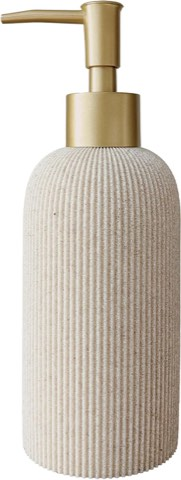
Sand Beige Hand Soap Dispenser with Matte Gold Pump for Bathroom, 11 oz
Shop on Amazon14. Walk-In Showers Took Over From Tubs
Walk-in showers have quietly become the default choice in most bathroom remodels, and it's not just a style preference.
Stepping over a tub wall gets old fast, especially for anyone thinking long-term about accessibility.
The best versions skip the glass-everywhere look in favor of one clean panel, a wide rain showerhead, and a bench or niche built right into the wall instead of added on later.
A curbless entry makes the whole bathroom read as larger, since there's no visual break between the shower floor and the rest of the room.
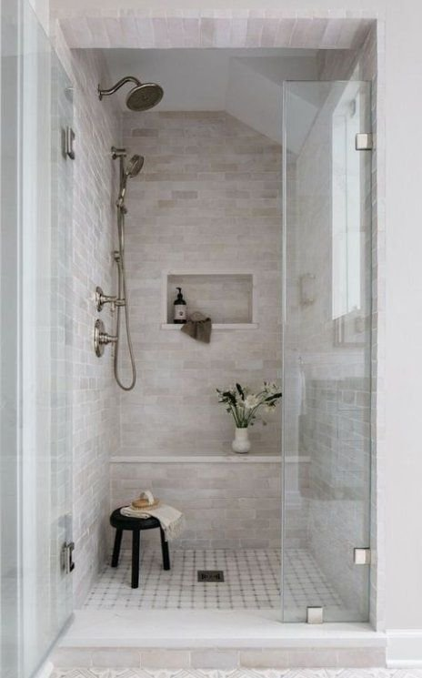
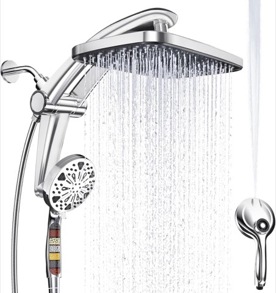
12-Inch High Pressure Rain Shower Head with Handheld Spray Combo, Magnetic
Shop on Amazon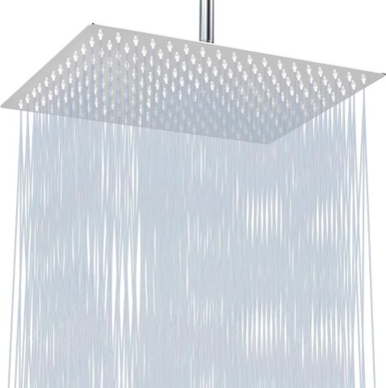
Extra Large Rain Shower Head, High Flow Stainless Steel, 16 x 12 Inch, Chrome
Shop on AmazonYou Don't Need All Fourteen
None of these trends ask for a full remodel to feel their impact.
A finish change, a styled shelf, or one material swap can shift an entire bathroom's mood without touching a single wall.
Pick the two or three that actually match how your bathroom gets used day to day, rather than trying to force all fourteen of them into one single room.
The ones that last are the ones that solve a real problem, not just the ones that photograph well.
Give the bathroom a full year living with a small change before deciding it needs a bigger, more expensive one — most of the time, it genuinely won't.